Mechanical Engineer | Mechanical Design & CAE
FEA | SolidWorks | Ansys | Optimization | Automation | Robotics
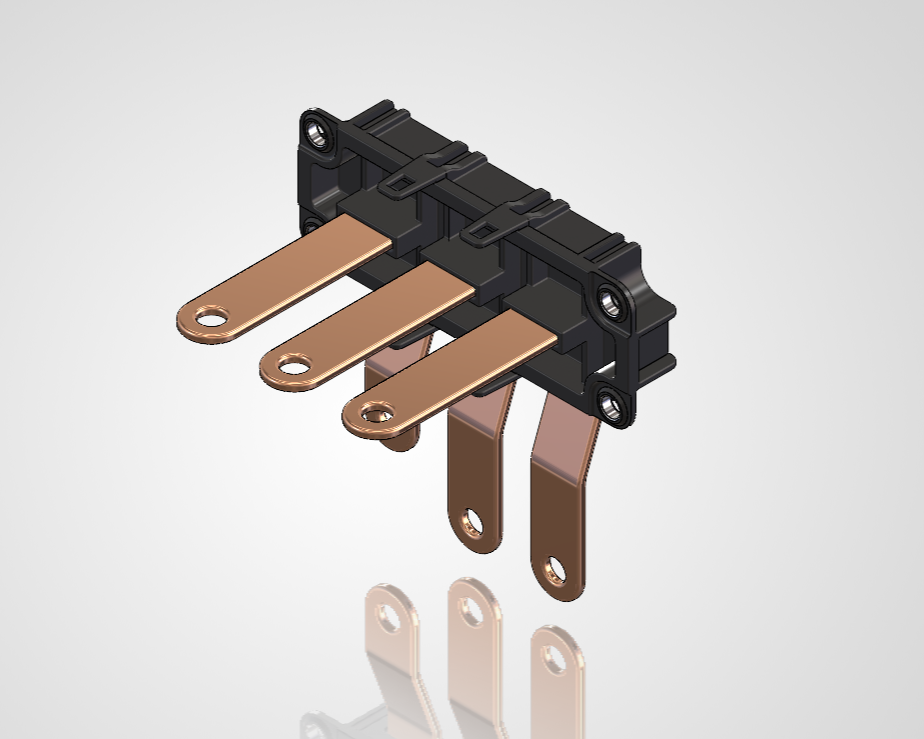
This project focused on the thermo-mechanical behavior and design iteration of a three-phase molded busbar assembly. The model includes three separate copper phase conductors integrated into a glass-fiber-reinforced PPS housing, together with metallic mounting inserts.
The study started with a V1 baseline and followed the same analysis sequence through a V2 design iteration. Steady-state thermal analysis was used to define the temperature field, which was then transferred into Static Structural analysis to evaluate thermal deformation, stress, and elastic strain. Thermal fatigue was assessed on the copper conductors, and the final V2 design was additionally evaluated using nonlinear frictional contact.
The design changes were intentionally local. Instead of changing the overall size or conductor layout, the iteration focused on smoothing the main copper bend and the surrounding housing transitions. This allowed the original packaging concept to remain almost unchanged while improving peak structural response and, most importantly, thermal fatigue behavior.
The geometry was developed with reference to ENNOVI phase busbar products. ENNOVI describes this type of component as a customizable multi-phase power interface used particularly in EV and HEV applications, including inverter and electric traction motor connections.
Tools: SolidWorks, ANSYS Mechanical, ANSYS MAPDL
Reference Model: ENNOVI Phase Busbar
Related Sectors: Automotive & E-Mobility, Commercial Transportation, Personal Mobility, Energy Storage, Power Electronics
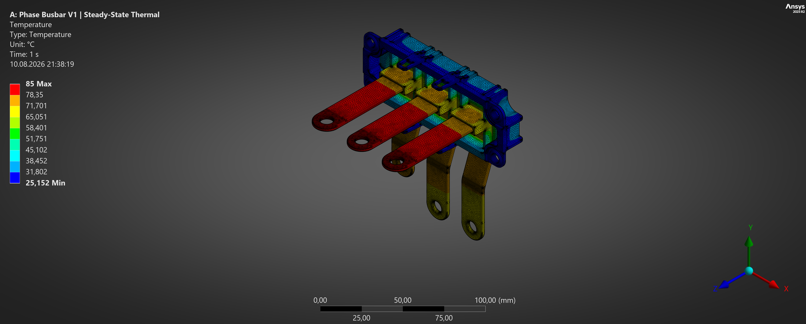
The final V2 design produced the largest improvement in thermal fatigue performance while keeping mass, temperature, and global deformation almost unchanged.
| Achievement | V1 | V2 | Change |
|---|---|---|---|
| Minimum fatigue life | 9.7898e7 cycles | 5.0329e9 cycles | 51.4× higher |
| Maximum fatigue damage | 10.215 | 0.19869 | -98.05% |
| Minimum fatigue safety factor | 0.92133 | 1.063 | +15.38% |
| Max copper / assembly stress | 130.25 MPa | 112.89 MPa | -13.33% |
| Max housing stress | 100.91 MPa | 89.269 MPa | -11.54% |
| Max copper elastic strain | 0.0013411 | 0.0010793 | -19.52% |
| Copper representative stress | 64.423 MPa | 58.786 MPa | -8.75% |
| Total mass | 301.35 g | 302.07 g | +0.24% |
The most important result was the change in fatigue behavior. V1 remained below a fatigue safety factor of 1.0 at the selected design life, while V2 increased the minimum safety factor above 1.0 and reduced calculated fatigue damage by approximately 98%.
This improvement was achieved with only a 0.24% increase in total assembly mass.
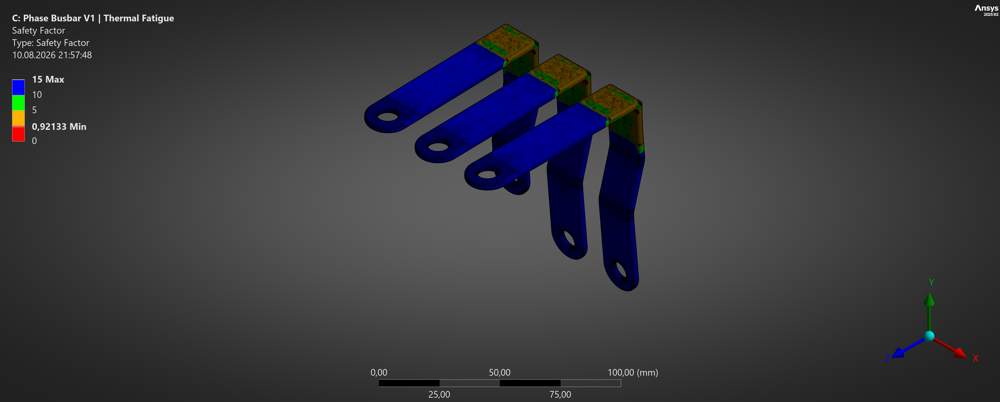
The main objective was to evaluate the thermal and structural behavior of the molded busbar assembly and determine whether local geometry improvements could reduce critical stress and fatigue sensitivity without significantly increasing mass or changing the overall packaging concept.
The study examined how the prescribed terminal temperature propagated through the copper conductors and molded housing, where the main thermo-mechanical stress and strain concentrations developed, and whether local changes to the copper bend and housing transitions could improve the structural and fatigue response. The final V2 design was also evaluated using nonlinear contact to understand how a more realistic interface definition affected the local stress distribution.
The project is a concept-level CAE study intended for comparative engineering evaluation rather than product certification.
The thermal model uses a prescribed temperature boundary condition and convection rather than a full electrical Joule-heating calculation. Current density, electrical resistance, electromagnetic effects, and short-circuit loading were therefore outside the scope.
Thermal fatigue was evaluated using a simplified stress-life approach for the copper conductors. The calculated life values depend on the selected S-N input and should primarily be interpreted as a comparative V1-to-V2 design indicator rather than a validated service-life prediction.
The standards referenced in the study were used to guide the engineering context and boundary-condition selection. No formal compliance or certification assessment was performed.
The busbar was treated as an automotive/e-mobility electrical component. ISO 16750-4:2023 was used as an environmental reference because it addresses climatic loads for electrical and electronic systems and components used in road vehicles, including electric propulsion systems. The selected 85 °C terminal temperature and 25 °C convection bulk temperature were used as concept-level thermal boundary conditions informed by this automotive environment, not as a claim that ISO 16750-4 directly prescribes those exact values for this component.
IEC 60068-2-14:2023 was used as a general reference for temperature-change loading. The standard addresses the effects of specified ambient temperature changes on components and equipment. In this project, the fatigue model was simplified to a cold reference state and the mapped hot operating state rather than reproducing a formal IEC qualification test.
IEC 60664-1 was considered as an insulation-design reference because it covers clearance, creepage distance, and solid-insulation principles for low-voltage equipment. Electrical insulation distances were not formally assessed in this project, so the standard is referenced only as design context.
UL 94 was also considered at material-selection level as a general flammability reference for molded electrical polymer applications. No UL 94 test or certification claim is made in this study. UL describes UL 94 classifications as small-scale flame-test classifications used to distinguish the burning behavior of plastic materials.
The assembly consists of three individual copper phase conductors passing through a molded insulating housing. Four metallic inserts represent the mounting interfaces.
The conductors were defined as C11000 ETP copper. The housing was modeled using Ryton R-4-220NA, a 40% glass-fiber-reinforced PPS material. Syensqo describes R-4-220NA as a 40% glass-fiber-reinforced PPS grade with high stiffness, good dimensional stability, low thermal expansion, chemical resistance, and high-temperature capability.
| Item | Definition |
|---|---|
| Conductor material | C11000 ETP Copper |
| Housing material | Ryton R-4-220NA, PPS-GF40 |
| V1 total mass | 301.35 g |
| V2 total mass | 302.07 g |
| Main analyses | Steady-State Thermal, Static Structural, Thermal Fatigue |
| Advanced V2 verification | Nonlinear Frictional Contact |
A prescribed temperature of 85 °C was applied at the selected terminal interface. Convection was applied to the exposed assembly surfaces using a 25 °C bulk temperature.
The resulting steady-state temperature field was transferred directly into the structural model for sequential thermo-mechanical analysis.
This setup was kept identical between V1 and V2 so that the influence of the geometry iteration could be compared on the same basis.
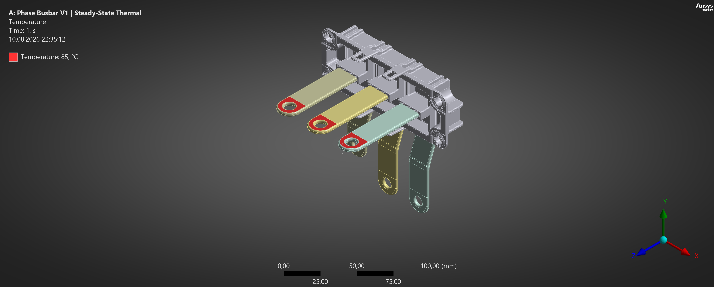
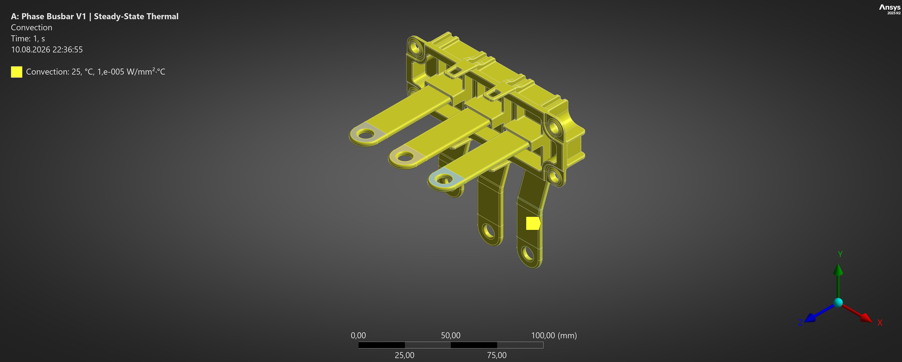
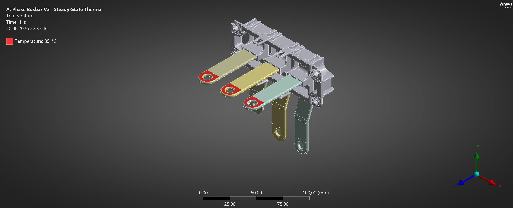
The mapped thermal field was used as the structural thermal load. The housing mounting interfaces were constrained at the mounting-hole regions.
Equivalent von Mises stress, equivalent elastic strain, and total deformation were evaluated for the whole assembly. Copper-only and housing-only results were also extracted separately to avoid interpreting a single global maximum without knowing which material produced it.
Two representative stress probe locations were additionally defined: one on a repeatable copper face near the critical bend/load-transfer region and one on the housing around the conductor exit region.
These probe locations were used as the main local quantities for mesh convergence because local absolute maxima showed significantly greater mesh sensitivity.
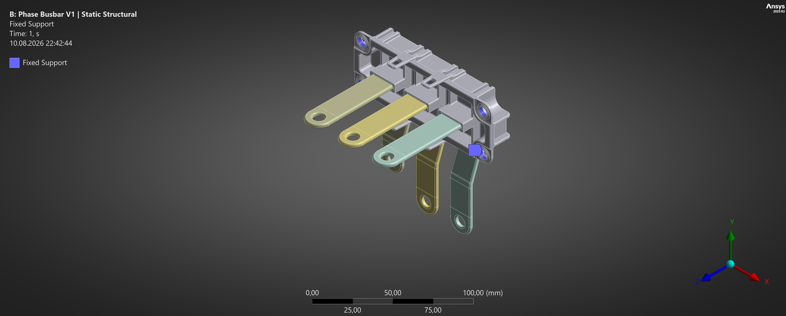
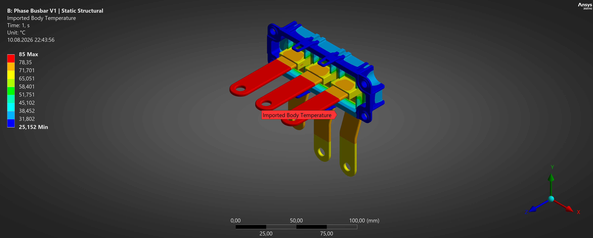
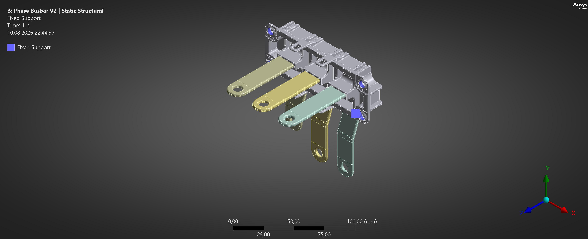
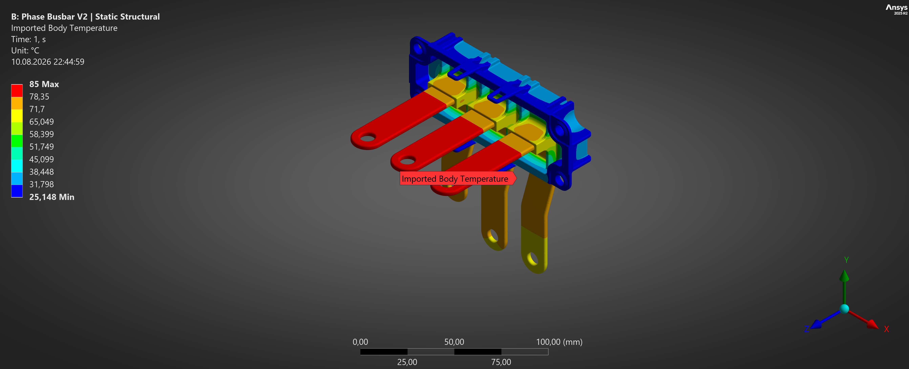
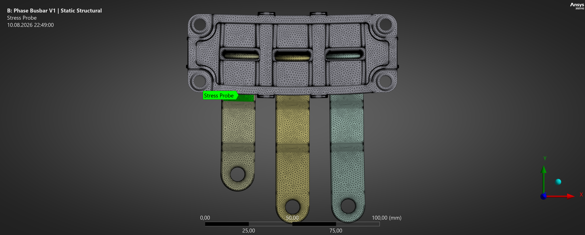
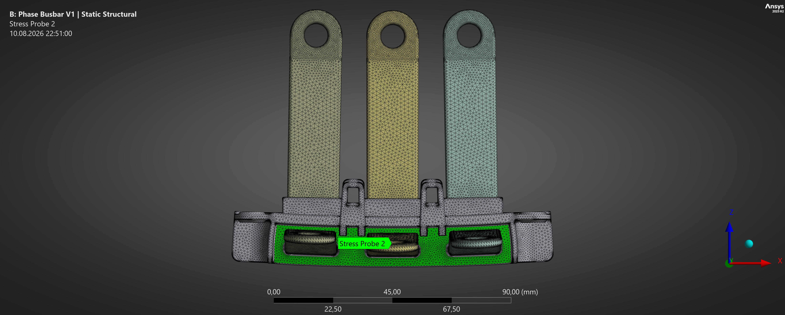
| Item | Value |
|---|---|
| Analyzed assembly | Three-phase molded busbar assembly |
| Design versions | V1 baseline + V2 design iteration |
| Conductor material | C11000 ETP Copper |
| Housing material | Ryton R-4-220NA, PPS-GF40 |
| Thermal loading | 85 °C prescribed terminal temperature |
| Convection reference | 25 °C bulk temperature on exposed surfaces |
| Structural constraint | Housing mounting interfaces |
| Thermo-mechanical coupling | Steady-state temperature field mapped into Static Structural |
| Main analyses | Steady-State Thermal + Static Structural + Thermal Fatigue |
| Fatigue method | Stress-Life, zero-based loading |
| Fatigue scope | Three copper conductors |
| Fatigue design life | 1.0 × 10⁹ cycles |
| Mesh levels | Coarse, Medium, Fine |
| Advanced verification | V2 nonlinear frictional contact |
| Friction coefficient | 0.2 |
Three mesh levels were generated using the same ten local sizing regions for both V1 and V2. The Coarse, Medium, and Fine meshes used global element sizes of 4, 2, and 1 mm respectively, with corresponding local sizing values of 2, 1, and 0.5 mm; smoothing was kept High and transition Slow, while Span Angle Center was changed from Coarse to Medium to Fine with each refinement level.
The convergence assessment did not rely only on absolute maximum stress. Peak local stresses increased substantially with refinement, particularly around small geometric transitions. For this reason, maximum stresses were retained and reported, but representative face-based stress probes and maximum total deformation were used as the main structural convergence indicators.
| Result | Coarse | Medium | Fine |
|---|---|---|---|
| All-bodies avg. temperature | 49.218 °C | 53.600 °C | 57.614 °C |
| Housing avg. temperature | 44.011 °C | 45.819 °C | 48.196 °C |
| Max total deformation | 0.13751 mm | 0.13722 mm | 0.13741 mm |
| Whole-assembly max stress | 74.954 MPa | 92.447 MPa | 130.25 MPa |
| Copper max stress | 74.954 MPa | 92.447 MPa | 130.25 MPa |
| Housing max stress | 49.553 MPa | 57.134 MPa | 100.91 MPa |
| Copper representative stress | 57.441 MPa | 59.368 MPa | 64.423 MPa |
| Housing representative stress | 23.297 MPa | 22.171 MPa | 21.241 MPa |
Between the Medium and Fine meshes, maximum deformation changed by only approximately 0.14%. The copper representative probe changed by approximately 8.5%, while the housing probe changed by approximately 4.2%.
The absolute peak stresses remained considerably more mesh-sensitive than the representative results. This behavior was therefore treated as local hotspot sensitivity rather than using peak stress alone as the convergence criterion.
| Result | Coarse | Medium | Fine |
|---|---|---|---|
| All-bodies avg. temperature | 48.881 °C | 53.328 °C | 57.777 °C |
| Housing avg. temperature | 43.524 °C | 45.347 °C | 48.953 °C |
| Max total deformation | 0.13840 mm | 0.13768 mm | 0.13778 mm |
| Whole-assembly max stress | 56.726 MPa | 64.840 MPa | 112.890 MPa |
| Copper max stress | 56.726 MPa | 64.840 MPa | 112.890 MPa |
| Housing max stress | 45.166 MPa | 59.876 MPa | 89.269 MPa |
| Copper representative stress | 56.726 MPa | 56.859 MPa | 58.786 MPa |
| Housing representative stress | 23.866 MPa | 21.960 MPa | 21.723 MPa |
V2 showed stronger convergence at the representative probe locations. Between the Medium and Fine meshes, the copper probe changed by approximately 3.4%, the housing probe by approximately 1.1%, and maximum total deformation by less than 0.1%.
As in V1, the local maximum stresses remained mesh-sensitive. The probe results and global deformation therefore provided the more stable basis for comparing the final V1 and V2 solutions.
The V1 fine-mesh solution reached the prescribed maximum temperature of 85 °C at the loaded terminal region. The average assembly temperature was 57.614 °C, while the housing reached a maximum of 77.513 °C and an average of 48.196 °C.
The temperature field shows heat spreading from the copper interfaces into the surrounding PPS housing while the mounting-side regions remain cooler.
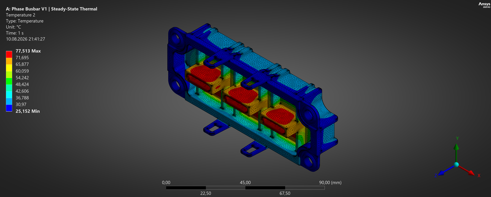
For the V1 fine mesh, the maximum total deformation was 0.13741 mm. The maximum whole-assembly equivalent stress and maximum copper stress were both 130.25 MPa, while the maximum housing stress was 100.91 MPa. The maximum copper equivalent elastic strain was 0.0013411. The representative stress values were 64.423 MPa for the copper and 21.241 MPa for the housing.
The large difference between the absolute local maximum and the representative face values reinforced the decision to use representative locations when judging local design behavior and mesh refinement.
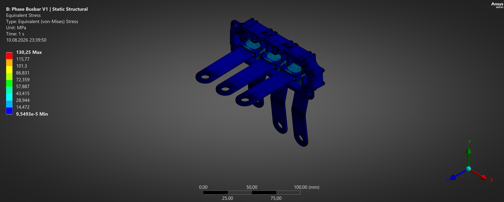
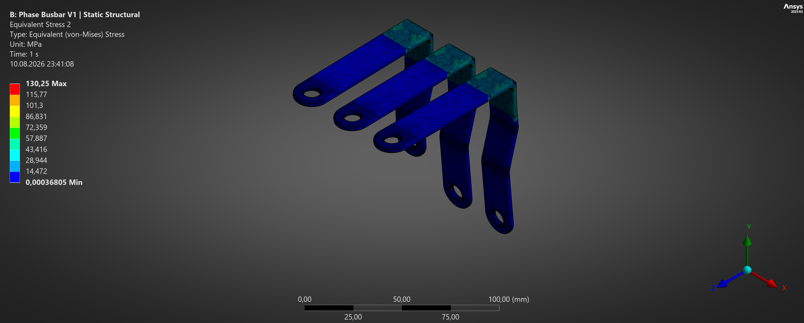
The V2 iteration focused on the regions where the copper geometry changes direction and where thermal expansion loads are transferred into the housing, while retaining the overall busbar arrangement, conductor width, primary interfaces, and general packaging concept. The most important geometric update was applied to the main copper bend, where the fillet radius was increased from R2 mm to R5 mm in order to create a smoother transition through the 90-degree direction change and reduce the local geometric severity of the bend. To maintain compatibility with this revised conductor shape, the corresponding housing groove was also updated so that the copper could remain properly seated without being forced into the previous transition geometry.
Additional housing refinements were introduced to improve load transfer and smooth local stress-raising features. An R5 mm fillet was added to the lower outer housing transition to preserve local material thickness while replacing a sharper transition with a smoother load path. An R3 mm fillet was also introduced in the upper transition region to further soften the local housing geometry without substantially changing the surrounding structure. In addition, the small protruding corners located at the intersections between the central members of the H-shaped slot structure and the conductor groove edges were rounded using R4 mm fillets. Four local corner transitions were modified around each of the three conductor grooves, resulting in a total of 12 R4 fillets. These changes were intended to reduce abrupt local geometric transitions and provide smoother structural support around the copper exit regions.
V1 Baseline
V2 Final Iteration
V1 Baseline
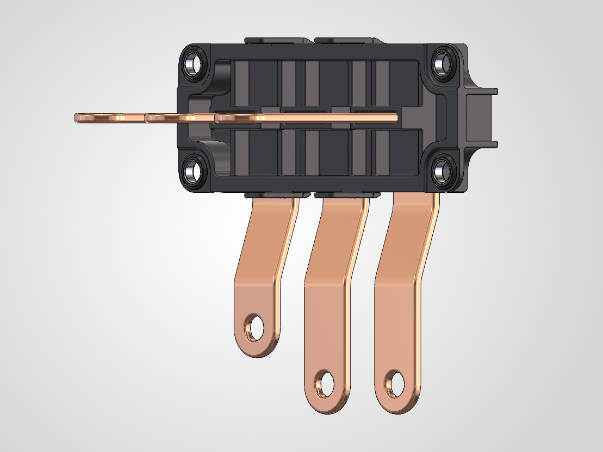
V2 Final Iteration
V1 Baseline
V2 Final Iteration
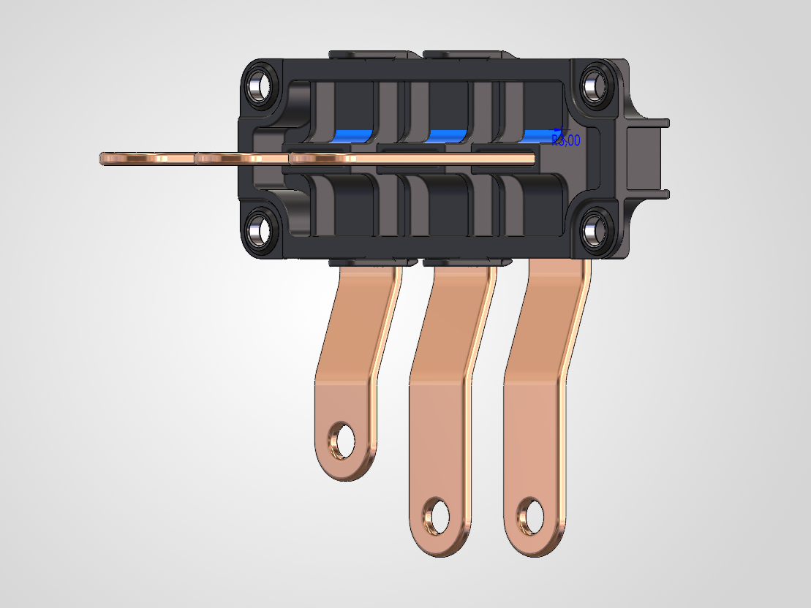
V1 Baseline
V2 Final Iteration
V1 Baseline
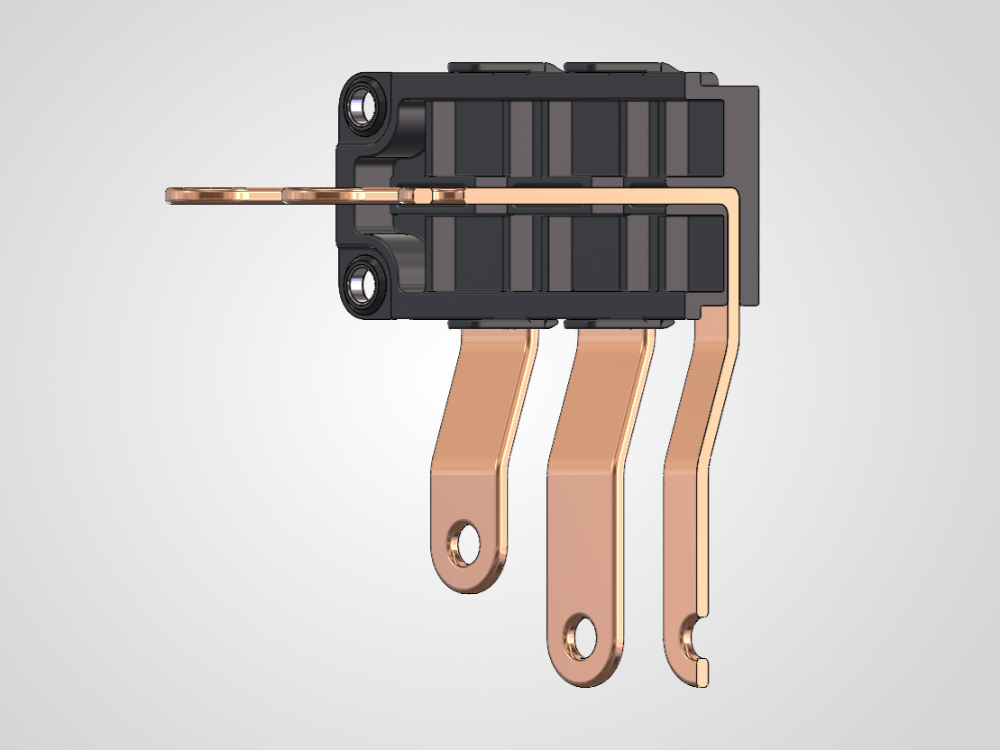
V2 Final Iteration
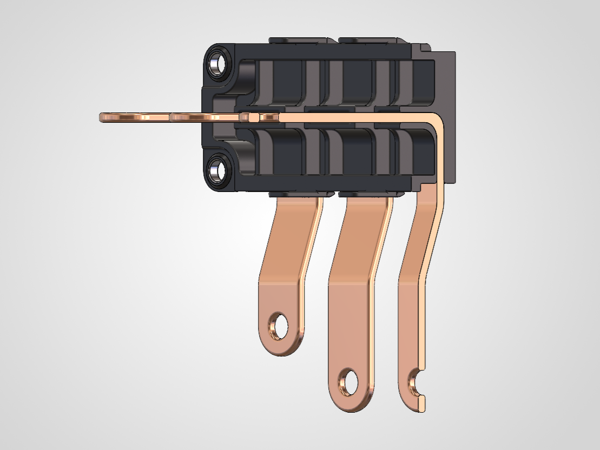
The final fine-mesh solutions were compared under the same thermal and structural boundary conditions.
| Metric | V1 | V2 | Change |
|---|---|---|---|
| Mass | 301.35 g | 302.07 g | +0.24% |
| All-bodies avg. temperature | 57.614 °C | 57.777 °C | +0.28% |
| Housing avg. temperature | 48.196 °C | 48.953 °C | +1.57% |
| Max total deformation | 0.13741 mm | 0.13778 mm | +0.27% |
| Average total deformation | 0.022936 mm | 0.02190 mm | -4.52% |
| Whole-assembly max stress | 130.25 MPa | 112.89 MPa | -13.33% |
| Copper max stress | 130.25 MPa | 112.89 MPa | -13.33% |
| Housing max stress | 100.91 MPa | 89.269 MPa | -11.54% |
| Copper max elastic strain | 0.0013411 | 0.0010793 | -19.52% |
| Housing max elastic strain | 0.0065369 | 0.0062832 | -3.88% |
| Copper representative stress | 64.423 MPa | 58.786 MPa | -8.75% |
| Housing representative stress | 21.241 MPa | 21.723 MPa | +2.27% |
The thermal field remained almost unchanged between the two versions, which was expected because the main conductor dimensions and thermal boundary conditions were retained.
Maximum total deformation also remained almost identical, increasing by only 0.27%.
The clearer structural improvement appeared in stress and strain. Maximum copper/assembly stress decreased by 13.33%, maximum housing stress decreased by 11.54%, and maximum copper elastic strain decreased by 19.52%.
The representative copper stress also decreased by 8.75%.
The housing representative probe increased slightly by 2.27%. This was treated as a minor local trade-off because the maximum housing stress decreased by more than 11%, while the overall fatigue performance improved significantly.
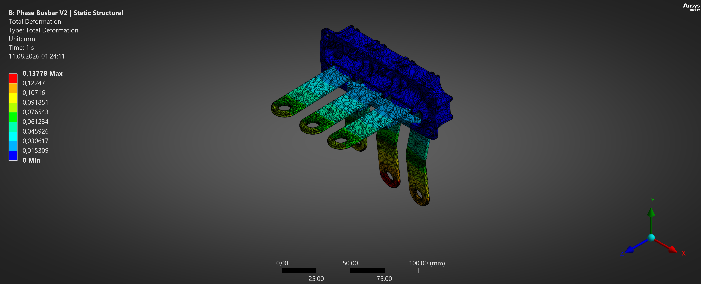
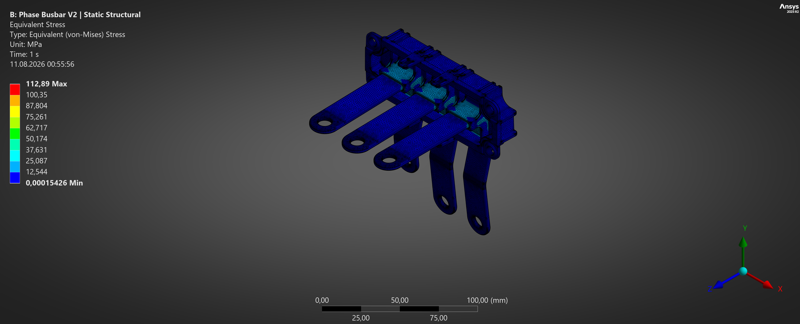
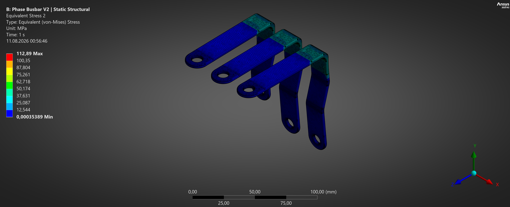
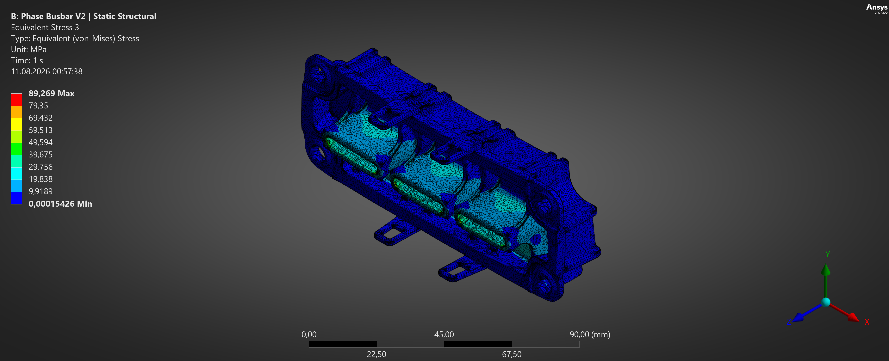
Thermal fatigue was evaluated on the three copper conductors only.
A Stress-Life approach was used with a copper S-N curve. The cycle was defined using a cold reference state and the mapped hot operating state. Loading was treated as zero-based for the fatigue calculation.
A design life of 1.0e9 cycles was used for both V1 and V2.
Because the S-N data represent a simplified material-level fatigue input rather than component-specific experimental validation, the results are primarily used to compare the two geometries.
| Metric | V1 | V2 | Change |
|---|---|---|---|
| Minimum life | 9.7898e7 cycles | 5.0329e9 cycles | 51.4× higher |
| Maximum damage @ 1e9 cycles | 10.215 | 0.19869 | -98.05% |
| Minimum safety factor | 0.92133 | 1.063 | +15.38% |
| Critical body | Copper C | Copper C | Same |
The fatigue result created the strongest distinction between V1 and V2.
At the selected design life, V1 produced a maximum damage value above 1 and a minimum fatigue safety factor below 1.0.
V2 reduced maximum calculated damage from 10.215 to 0.19869, increased minimum life by approximately 51 times, and raised the minimum fatigue safety factor from 0.92133 to 1.063.
The iteration therefore changed the design from a configuration that did not meet the selected fatigue design-life target to one that exceeded it under the assumptions of the simplified fatigue model.
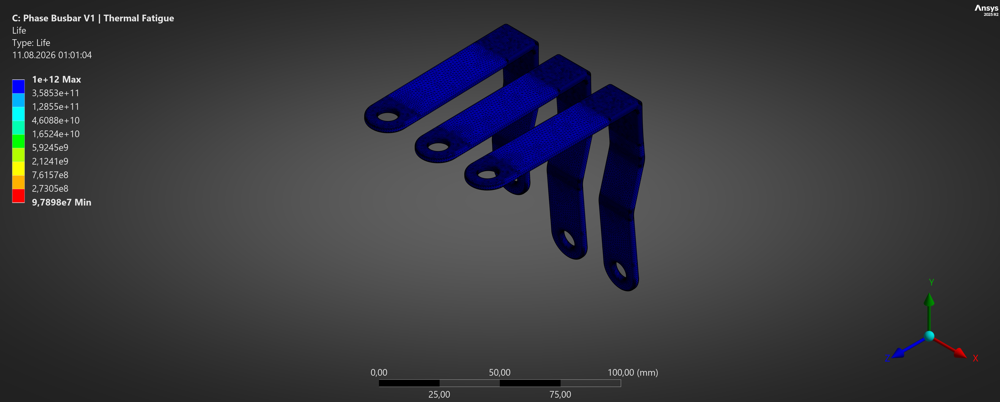
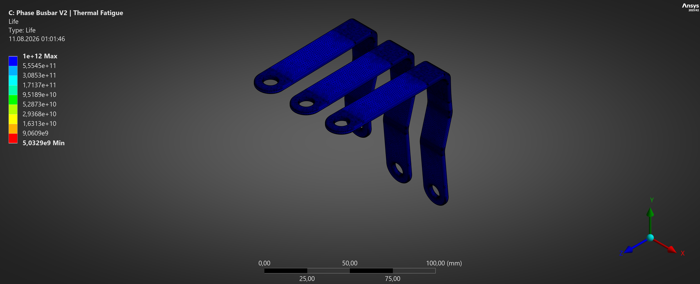
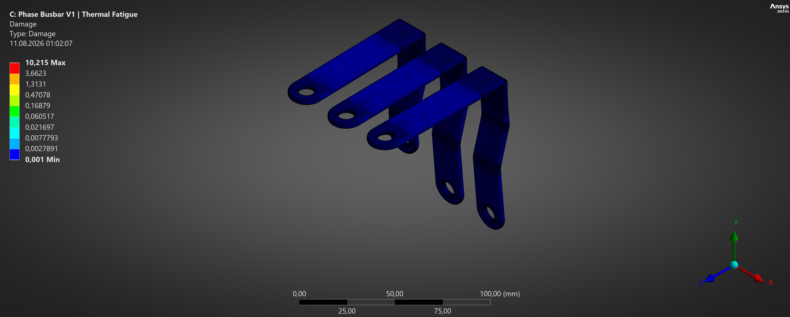
The linear V1-to-V2 comparison was intentionally kept consistent for design evaluation. After the V2 geometry was finalized, an additional nonlinear contact model was created to study the assembly with more realistic copper-to-housing interaction.
The copper-to-housing interfaces were modeled using frictional contact with a coefficient of friction of 0.2. The solution allowed the interfaces to develop local sticking, sliding, near-contact, and open regions rather than forcing the complete interface to remain kinematically tied.
During this stage, the final nonlinear model was executed directly through the ANSYS MAPDL Product Launcher for solver stability while retaining the same analysis definition. The converged MAPDL result set was then used for post-processing.
| Result | V2 Nonlinear Contact |
|---|---|
| Maximum total deformation | 0.110 mm |
| Maximum equivalent stress | 52.1 MPa |
| Maximum equivalent elastic strain | 0.003271 |
| Maximum contact pressure | 41.7 MPa |
| Maximum penetration | 0.00109 mm / 1.09 µm |
The maximum penetration was approximately 1.09 µm, which remained very small compared with the overall component dimensions and calculated deformation.
The contact-pressure result showed localized load transfer around the copper-housing interfaces rather than a uniform pressure field.
The contact-status plot showed a combination of sticking, sliding, near-contact, and open regions. This confirmed that the nonlinear model allowed the individual conductor interfaces to respond locally instead of behaving as a fully constrained interface.
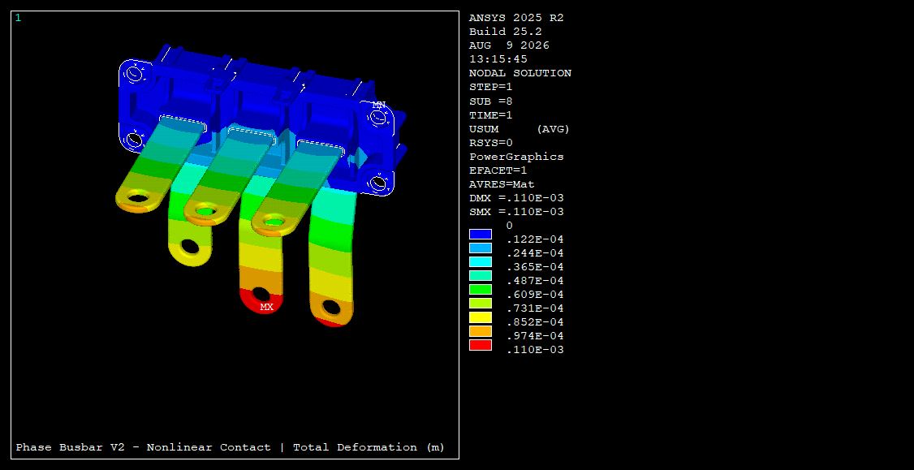
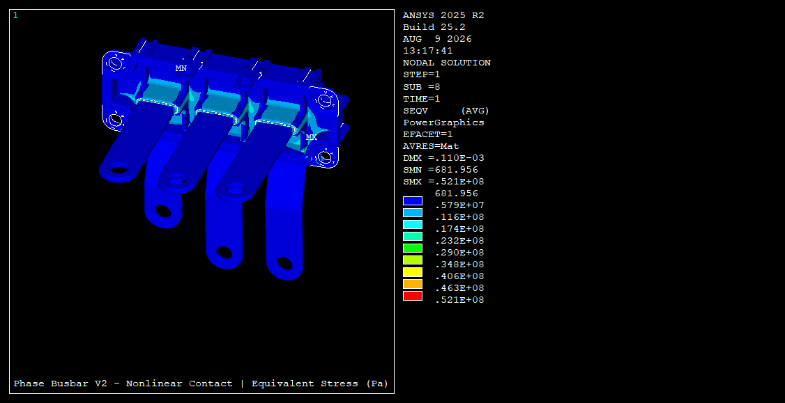
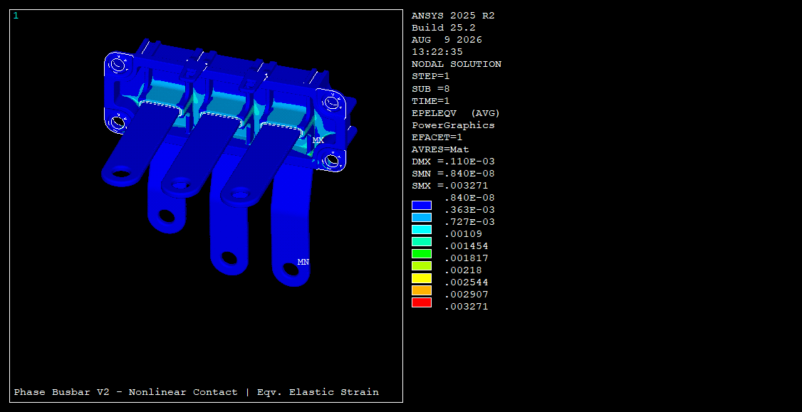
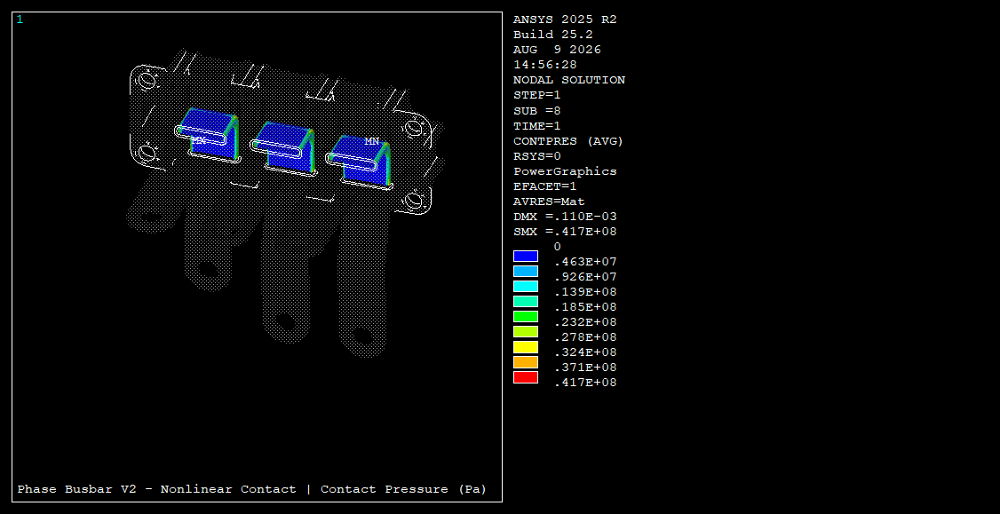
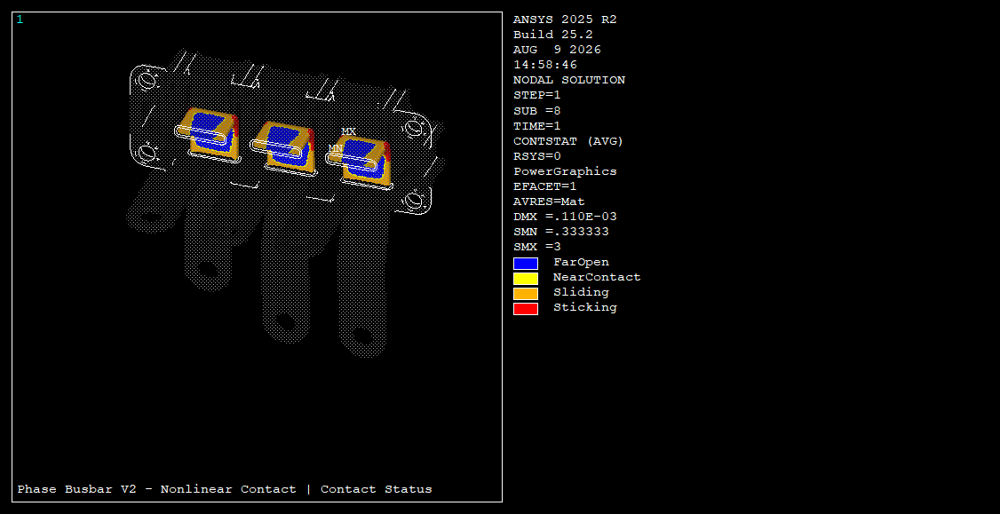
The same physical representative regions used in the linear V2 model were also extracted from the nonlinear MAPDL result.
| Representative Region | Linear V2 | Nonlinear V2 | Difference |
|---|---|---|---|
| Copper | 58.786 MPa | 22.934 MPa | -61.0% |
| Housing | 21.723 MPa | 11.865 MPa | -45.4% |
These reductions should not be interpreted as an additional V2 design improvement. The geometry is identical in both cases.
Instead, they show the effect of changing the interface physics. When local separation and sliding are permitted, the load path and stress distribution differ from the simplified linear model.
This comparison was useful because it showed how strongly the assumed interface behavior can affect local stress prediction.
The nonlinear representative stresses were extracted from the same physical CAD-face locations used in the linear V2 study.
The Workbench faces were identified using their geometry information and mapped into the MAPDL model using material identification and global face coordinates. The selected node sets were visually verified before the maximum equivalent stress was extracted from the converged nonlinear result.
This provided a direct location-to-location comparison instead of comparing unrelated global hotspots.
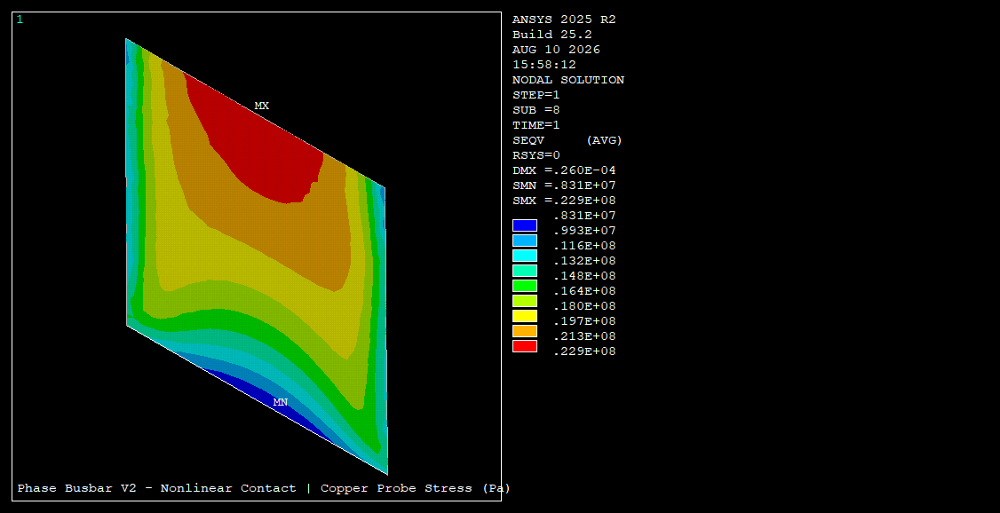
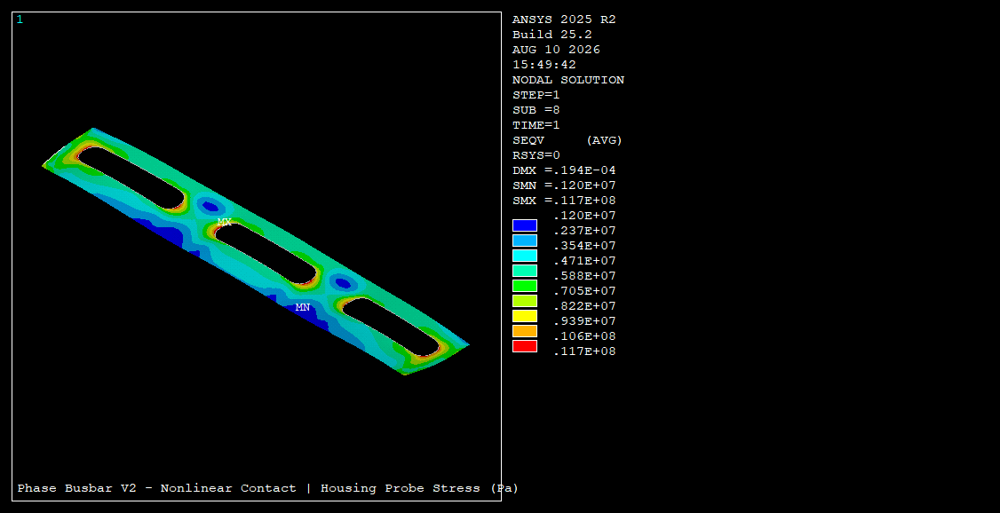
The final V2 iteration did not significantly change the global thermal response or deformation of the assembly. This was expected because the primary dimensions, materials, and thermal loading remained almost unchanged.
The main effect of the iteration appeared in local structural behavior.
Increasing the copper bend radius and smoothing the surrounding housing transitions reduced the severity of the stress field around the critical regions. Peak copper and housing stresses decreased, and the maximum copper elastic strain dropped by almost 20%.
The fatigue study showed an even larger effect. Although the V2 mass increased by only 0.24%, the predicted minimum fatigue life increased by more than 50 times and the calculated maximum damage at the selected design life decreased by approximately 98%.
Not every local result improved. The housing representative stress increased by approximately 2.3%. However, this small increase occurred together with lower maximum housing stress, lower maximum copper stress and strain, and substantially improved fatigue performance. The V2 geometry was therefore considered the stronger overall design rather than optimizing a single local result.
The nonlinear study added a second level of verification. It showed that the local stress field changes substantially when the copper-housing interfaces are allowed to open, slide, and stick. The small calculated penetration and localized contact-pressure distribution supported the numerical behavior of the converged contact solution.
The V2 design improved the thermo-mechanical performance of the three-phase molded busbar assembly through a small set of local geometry changes.
The final iteration reduced maximum copper/assembly stress by 13.33%, maximum housing stress by 11.54%, and maximum copper elastic strain by 19.52%, while increasing total mass by only 0.24%.
The largest improvement was observed in thermal fatigue. Minimum predicted life increased from 9.7898e7 to 5.0329e9 cycles, maximum damage decreased by 98.05%, and the minimum fatigue safety factor increased from 0.92133 to 1.063.
The final design was then evaluated with nonlinear frictional contact. The model converged with a maximum contact pressure of 41.7 MPa and a maximum penetration of only 1.09 µm, while showing realistic local sticking, sliding, and interface opening behavior.
Based on the combined thermal, structural, fatigue, convergence, and nonlinear contact results, V2 was selected as the final design iteration.
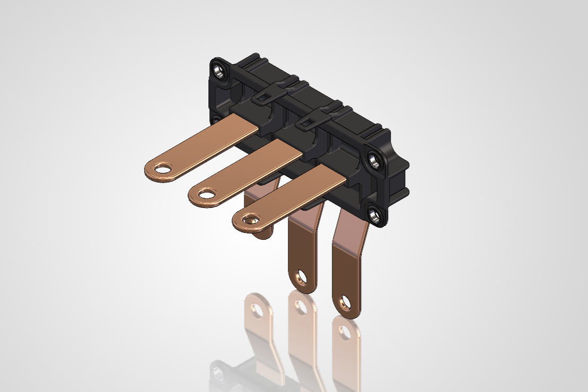
Mechanical engineer focused on mechanical design, CAE, and engineering analysis. This portfolio showcases selected projects in FEA, simulation, optimization, and mechanical design, with applications in manufacturing, automation, and robotics.
Resume: Taylan Daldal
LinkedIn: linkedin.com/in/taylandaldal
Email: daldaltaylan@gmail.com